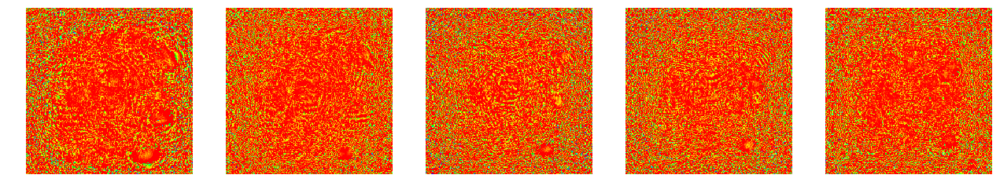
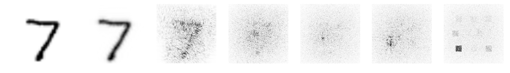
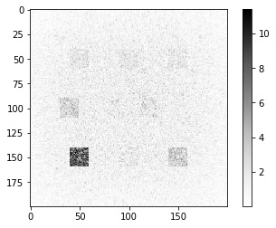
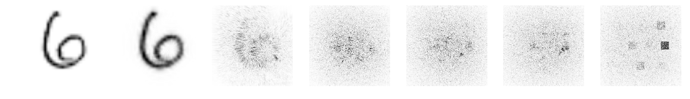
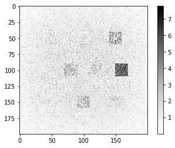
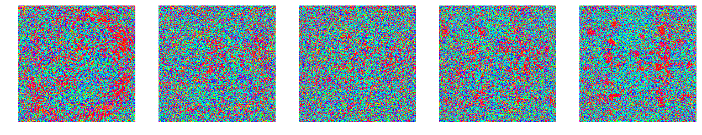
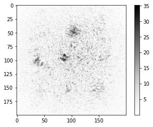
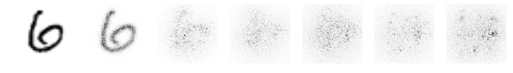
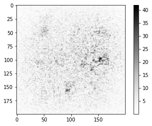

<!DOCTYPE html>


<html lang="en" >

  <head>
    <meta charset="utf-8" />
    <meta name="viewport" content="width=device-width, initial-scale=1.0" /><meta name="generator" content="Docutils 0.18.1: http://docutils.sourceforge.net/" />

    <title>LightRidge ASPLOS 24 AE &#8212; LightRidge 0.1.6 documentation</title>
  
  
  
  <script data-cfasync="false">
    document.documentElement.dataset.mode = localStorage.getItem("mode") || "";
    document.documentElement.dataset.theme = localStorage.getItem("theme") || "light";
  </script>
  
  <!-- Loaded before other Sphinx assets -->
  <link href="_static/styles/theme.css?digest=ac02cc09edc035673794" rel="stylesheet" />
<link href="_static/styles/bootstrap.css?digest=ac02cc09edc035673794" rel="stylesheet" />
<link href="_static/styles/pydata-sphinx-theme.css?digest=ac02cc09edc035673794" rel="stylesheet" />

  
  <link href="_static/vendor/fontawesome/6.1.2/css/all.min.css?digest=ac02cc09edc035673794" rel="stylesheet" />
  <link rel="preload" as="font" type="font/woff2" crossorigin href="_static/vendor/fontawesome/6.1.2/webfonts/fa-solid-900.woff2" />
<link rel="preload" as="font" type="font/woff2" crossorigin href="_static/vendor/fontawesome/6.1.2/webfonts/fa-brands-400.woff2" />
<link rel="preload" as="font" type="font/woff2" crossorigin href="_static/vendor/fontawesome/6.1.2/webfonts/fa-regular-400.woff2" />

    <link rel="stylesheet" type="text/css" href="_static/pygments.css?v=fa44fd50" />
    <link rel="stylesheet" type="text/css" href="_static/css/sphinx_rtd_size.css?v=3b072d6b" />
  
  <!-- Pre-loaded scripts that we'll load fully later -->
  <link rel="preload" as="script" href="_static/scripts/bootstrap.js?digest=ac02cc09edc035673794" />
<link rel="preload" as="script" href="_static/scripts/pydata-sphinx-theme.js?digest=ac02cc09edc035673794" />
  <script src="_static/vendor/fontawesome/6.1.2/js/all.min.js?digest=ac02cc09edc035673794"></script>

    <script src="_static/jquery.js?v=5d32c60e"></script>
    <script src="_static/_sphinx_javascript_frameworks_compat.js?v=2cd50e6c"></script>
    <script src="_static/documentation_options.js?v=79d558ae"></script>
    <script src="_static/doctools.js?v=888ff710"></script>
    <script src="_static/sphinx_highlight.js?v=dc90522c"></script>
    <script>DOCUMENTATION_OPTIONS.pagename = 'lightridge_tutorial_ASPLOS24';</script>
    <link rel="index" title="Index" href="genindex.html" />
    <link rel="search" title="Search" href="search.html" />
  <meta name="viewport" content="width=device-width, initial-scale=1"/>
  <meta name="docsearch:language" content="en"/>
  </head>
  
  
  <body data-bs-spy="scroll" data-bs-target=".bd-toc-nav" data-offset="180" data-bs-root-margin="0px 0px -60%" data-default-mode="">

  
  
  <a class="skip-link" href="#main-content">Skip to main content</a>
  
  <div id="pst-scroll-pixel-helper"></div>

  
  <button type="button" class="btn rounded-pill" id="pst-back-to-top">
    <i class="fa-solid fa-arrow-up"></i>
    Back to top
  </button>

  
  <input type="checkbox"
          class="sidebar-toggle"
          name="__primary"
          id="__primary"/>
  <label class="overlay overlay-primary" for="__primary"></label>
  
  <input type="checkbox"
          class="sidebar-toggle"
          name="__secondary"
          id="__secondary"/>
  <label class="overlay overlay-secondary" for="__secondary"></label>
  
  <div class="search-button__wrapper">
    <div class="search-button__overlay"></div>
    <div class="search-button__search-container">
<form class="bd-search d-flex align-items-center"
      action="search.html"
      method="get">
  <i class="fa-solid fa-magnifying-glass"></i>
  <input type="search"
         class="form-control"
         name="q"
         id="search-input"
         placeholder="Search the docs ..."
         aria-label="Search the docs ..."
         autocomplete="off"
         autocorrect="off"
         autocapitalize="off"
         spellcheck="false"/>
  <span class="search-button__kbd-shortcut"><kbd class="kbd-shortcut__modifier">Ctrl</kbd>+<kbd>K</kbd></span>
</form></div>
  </div>
  
    <nav class="bd-header navbar navbar-expand-lg bd-navbar">
<div class="bd-header__inner bd-page-width">
  <label class="sidebar-toggle primary-toggle" for="__primary">
    <span class="fa-solid fa-bars"></span>
  </label>
  
  
  <div class="col-lg-3 navbar-header-items__start">
    
      <div class="navbar-item">
  

<a class="navbar-brand logo" href="index.html">
  
  
  
  
  
    <p class="title logo__title">LightRidge 0.1.6 documentation</p>
  
</a></div>
    
  </div>
  
  <div class="col-lg-9 navbar-header-items">
    
    <div class="me-auto navbar-header-items__center">
      
        <div class="navbar-item"><nav class="navbar-nav">
  <p class="sidebar-header-items__title"
     role="heading"
     aria-level="1"
     aria-label="Site Navigation">
    Site Navigation
  </p>
  <ul class="bd-navbar-elements navbar-nav">
    
                    <li class="nav-item">
                      <a class="nav-link nav-internal" href="installation.html">
                        Installation
                      </a>
                    </li>
                

                    <li class="nav-item">
                      <a class="nav-link nav-internal" href="samples.html">
                        LightRidge Sample
                      </a>
                    </li>
                

                    <li class="nav-item">
                      <a class="nav-link nav-internal" href="tutorials.html">
                        LightRidge Case-studies
                      </a>
                    </li>
                

                    <li class="nav-item">
                      <a class="nav-link nav-internal" href="pythonapi.html">
                        LightRidge API
                      </a>
                    </li>
                
  </ul>
</nav></div>
      
    </div>
    
    
    <div class="navbar-header-items__end">
      
        <div class="navbar-item navbar-persistent--container">
          
 <script>
 document.write(`
   <button class="btn navbar-btn search-button-field search-button__button" title="Search" aria-label="Search" data-bs-placement="bottom" data-bs-toggle="tooltip">
    <i class="fa-solid fa-magnifying-glass"></i>
    <span class="search-button__default-text">Search</span>
    <span class="search-button__kbd-shortcut"><kbd class="kbd-shortcut__modifier">Ctrl</kbd>+<kbd class="kbd-shortcut__modifier">K</kbd></span>
   </button>
 `);
 </script>
        </div>
      
      
        <div class="navbar-item">
<script>
document.write(`
  <button class="btn btn-sm navbar-btn theme-switch-button" title="light/dark" aria-label="light/dark" data-bs-placement="bottom" data-bs-toggle="tooltip">
    <span class="theme-switch nav-link" data-mode="light"><i class="fa-solid fa-sun fa-lg"></i></span>
    <span class="theme-switch nav-link" data-mode="dark"><i class="fa-solid fa-moon fa-lg"></i></span>
    <span class="theme-switch nav-link" data-mode="auto"><i class="fa-solid fa-circle-half-stroke fa-lg"></i></span>
  </button>
`);
</script></div>
      
    </div>
    
  </div>
  
  
    <div class="navbar-persistent--mobile">
 <script>
 document.write(`
   <button class="btn navbar-btn search-button-field search-button__button" title="Search" aria-label="Search" data-bs-placement="bottom" data-bs-toggle="tooltip">
    <i class="fa-solid fa-magnifying-glass"></i>
    <span class="search-button__default-text">Search</span>
    <span class="search-button__kbd-shortcut"><kbd class="kbd-shortcut__modifier">Ctrl</kbd>+<kbd class="kbd-shortcut__modifier">K</kbd></span>
   </button>
 `);
 </script>
    </div>
  

  
    <label class="sidebar-toggle secondary-toggle" for="__secondary" tabindex="0">
      <span class="fa-solid fa-outdent"></span>
    </label>
  
</div>

    </nav>
  
  <div class="bd-container">
    <div class="bd-container__inner bd-page-width">
      
      <div class="bd-sidebar-primary bd-sidebar hide-on-wide">
        

  
  <div class="sidebar-header-items sidebar-primary__section">
    
    
      <div class="sidebar-header-items__center">
        
          <div class="navbar-item"><nav class="navbar-nav">
  <p class="sidebar-header-items__title"
     role="heading"
     aria-level="1"
     aria-label="Site Navigation">
    Site Navigation
  </p>
  <ul class="bd-navbar-elements navbar-nav">
    
                    <li class="nav-item">
                      <a class="nav-link nav-internal" href="installation.html">
                        Installation
                      </a>
                    </li>
                

                    <li class="nav-item">
                      <a class="nav-link nav-internal" href="samples.html">
                        LightRidge Sample
                      </a>
                    </li>
                

                    <li class="nav-item">
                      <a class="nav-link nav-internal" href="tutorials.html">
                        LightRidge Case-studies
                      </a>
                    </li>
                

                    <li class="nav-item">
                      <a class="nav-link nav-internal" href="pythonapi.html">
                        LightRidge API
                      </a>
                    </li>
                
  </ul>
</nav></div>
        
      </div>
    
    
    
      <div class="sidebar-header-items__end">
        
          <div class="navbar-item">
<script>
document.write(`
  <button class="btn btn-sm navbar-btn theme-switch-button" title="light/dark" aria-label="light/dark" data-bs-placement="bottom" data-bs-toggle="tooltip">
    <span class="theme-switch nav-link" data-mode="light"><i class="fa-solid fa-sun fa-lg"></i></span>
    <span class="theme-switch nav-link" data-mode="dark"><i class="fa-solid fa-moon fa-lg"></i></span>
    <span class="theme-switch nav-link" data-mode="auto"><i class="fa-solid fa-circle-half-stroke fa-lg"></i></span>
  </button>
`);
</script></div>
        
      </div>
    
  </div>
  
  
  <div class="sidebar-primary-items__end sidebar-primary__section">
  </div>
  
  <div id="rtd-footer-container"></div>


      </div>
      
      <main id="main-content" class="bd-main">
        
        
          <div class="bd-content">
            <div class="bd-article-container">
              
              <div class="bd-header-article">
<div class="header-article-items header-article__inner">
  
    <div class="header-article-items__start">
      
        <div class="header-article-item">


<nav aria-label="Breadcrumb">
  <ul class="bd-breadcrumbs">
    
    <li class="breadcrumb-item breadcrumb-home">
      <a href="index.html" class="nav-link" aria-label="Home">
        <i class="fa-solid fa-home"></i>
      </a>
    </li>
    <li class="breadcrumb-item active" aria-current="page">LightRidge...</li>
  </ul>
</nav>
</div>
      
    </div>
  
  
</div>
</div>
              
              
              
                
<div id="searchbox"></div>
                <article class="bd-article" role="main">
                  
  <section id="lightridge-asplos-24-ae">
<h1>LightRidge ASPLOS 24 AE<a class="headerlink" href="#lightridge-asplos-24-ae" title="Link to this heading">#</a></h1>
<p>The following tutorial is a LightRidge tutorial of building a basic
diffractive optical neural networks (DONNs)</p>
<section id="note-this-colab-code-is-tested-with-free-colab-runtime-for-simple-artifact-evaluation-asplos-24-for-better-runtime-please-use-your-own-gpu-server">
<h2>NOTE: This colab code is tested with free colab runtime for simple Artifact Evaluation (ASPLOS’24) . For better runtime, please use your own GPU server.<a class="headerlink" href="#note-this-colab-code-is-tested-with-free-colab-runtime-for-simple-artifact-evaluation-asplos-24-for-better-runtime-please-use-your-own-gpu-server" title="Link to this heading">#</a></h2>
<div class="highlight-ipython3 notranslate"><div class="highlight"><pre><span></span>!pip install lightridge
</pre></div>
</div>
<div class="highlight-default notranslate"><div class="highlight"><pre><span></span>WARNING: Ignoring invalid distribution -orch (/home/cunxi/.conda/envs/rl/lib/python3.7/site-packages)
Requirement already satisfied: lightridge in /home/cunxi/.conda/envs/rl/lib/python3.7/site-packages/lightridge-0.2.0-py3.7.egg (0.2.0)
Requirement already satisfied: torch==1.12.0 in /home/cunxi/.conda/envs/rl/lib/python3.7/site-packages (from lightridge) (1.12.0)
Requirement already satisfied: torchvision==0.13.0 in /home/cunxi/.conda/envs/rl/lib/python3.7/site-packages (from lightridge) (0.13.0)
Requirement already satisfied: setuptools&gt;=42 in /home/cunxi/.conda/envs/rl/lib/python3.7/site-packages (from lightridge) (52.0.0.post20210125)
Requirement already satisfied: lightpipes in /home/cunxi/.conda/envs/rl/lib/python3.7/site-packages/LightPipes-2.1.0-py3.7.egg (from lightridge) (2.1.0)
Requirement already satisfied: typing-extensions in /home/cunxi/.conda/envs/rl/lib/python3.7/site-packages (from torch==1.12.0-&gt;lightridge) (4.5.0)
Requirement already satisfied: numpy in /home/cunxi/.conda/envs/rl/lib/python3.7/site-packages (from torchvision==0.13.0-&gt;lightridge) (1.19.2)
Requirement already satisfied: requests in /home/cunxi/.conda/envs/rl/lib/python3.7/site-packages (from torchvision==0.13.0-&gt;lightridge) (2.31.0)
Requirement already satisfied: pillow!=8.3.*,&gt;=5.3.0 in /home/cunxi/.conda/envs/rl/lib/python3.7/site-packages (from torchvision==0.13.0-&gt;lightridge) (9.3.0)
Requirement already satisfied: scipy in /home/cunxi/.conda/envs/rl/lib/python3.7/site-packages (from lightpipes-&gt;lightridge) (1.7.3)
Requirement already satisfied: charset-normalizer&lt;4,&gt;=2 in /home/cunxi/.conda/envs/rl/lib/python3.7/site-packages (from requests-&gt;torchvision==0.13.0-&gt;lightridge) (3.0.1)
Requirement already satisfied: idna&lt;4,&gt;=2.5 in /home/cunxi/.conda/envs/rl/lib/python3.7/site-packages (from requests-&gt;torchvision==0.13.0-&gt;lightridge) (3.4)
Requirement already satisfied: urllib3&lt;3,&gt;=1.21.1 in /home/cunxi/.conda/envs/rl/lib/python3.7/site-packages (from requests-&gt;torchvision==0.13.0-&gt;lightridge) (1.26.15)
Requirement already satisfied: certifi&gt;=2017.4.17 in /home/cunxi/.conda/envs/rl/lib/python3.7/site-packages (from requests-&gt;torchvision==0.13.0-&gt;lightridge) (2020.12.5)
WARNING: Ignoring invalid distribution -orch (/home/cunxi/.conda/envs/rl/lib/python3.7/site-packages)

</pre></div>
</div>
<section id="step-1-lightridge-installation">
<h3>Step 1: LightRidge installation<a class="headerlink" href="#step-1-lightridge-installation" title="Link to this heading">#</a></h3>
<h1><p>LightRidge Design Flow</p>
</h1>


<p></p><p>More can be found at <a class="reference external" href="https://lightridge.github.io/lightridge/index">https://lightridge.github.io/lightridge/index</a>.html#</p>
</section>
<section id="step-2-check-lightridge-installation">
<h3>Step 2: Check LightRidge installation<a class="headerlink" href="#step-2-check-lightridge-installation" title="Link to this heading">#</a></h3>
<div class="highlight-ipython3 notranslate"><div class="highlight"><pre><span></span>import lightridge
import lightridge.layers as layers
import lightridge.utils as utils
import lightridge.data as dataset
from   lightridge.get_h import _field_Fresnel
</pre></div>
</div>
<pre class="literal-block">/home/cunxi/.conda/envs/rl/lib/python3.7/site-packages/lightridge-0.2.0-py3.7.egg/lightridge/get_h.py:27: UserWarning:
<strong>************************</strong> WARNING <strong>*******************</strong>
LightPipes: Cannot import pyFFTW, falling back to numpy.fft.
(Try to) install pyFFTW on your computer for faster performance.
Enter at a terminal prompt: python -m pip install pyfftw.
Or reinstall LightPipes with the option pyfftw
Enter: python -m pip install lightpipes[pyfftw]

You can suppress warnings by using the -Wignore option:
Enter: python _Wignore <strong>*</strong>.py
<strong>*********************************************************</strong></pre>
</section>
</section>
<section id="gpu-details">
<h2>GPU Details<a class="headerlink" href="#gpu-details" title="Link to this heading">#</a></h2>
<p>The GPU details can be accessed by <code class="docutils literal notranslate"><span class="pre">!nvidia-smi</span></code>.</p>
<div class="highlight-ipython3 notranslate"><div class="highlight"><pre><span></span>!nvidia-smi
</pre></div>
</div>
<div class="highlight-default notranslate"><div class="highlight"><pre><span></span><span class="n">Mon</span> <span class="n">Oct</span>  <span class="mi">2</span> <span class="mi">18</span><span class="p">:</span><span class="mi">45</span><span class="p">:</span><span class="mi">37</span> <span class="mi">2023</span>
<span class="o">+-----------------------------------------------------------------------------+</span>
<span class="o">|</span> <span class="n">NVIDIA</span><span class="o">-</span><span class="n">SMI</span> <span class="mf">510.47.03</span>    <span class="n">Driver</span> <span class="n">Version</span><span class="p">:</span> <span class="mf">510.47.03</span>    <span class="n">CUDA</span> <span class="n">Version</span><span class="p">:</span> <span class="mf">11.6</span>     <span class="o">|</span>
<span class="o">|-------------------------------+----------------------+----------------------+</span>
<span class="o">|</span> <span class="n">GPU</span>  <span class="n">Name</span>        <span class="n">Persistence</span><span class="o">-</span><span class="n">M</span><span class="o">|</span> <span class="n">Bus</span><span class="o">-</span><span class="n">Id</span>        <span class="n">Disp</span><span class="o">.</span><span class="n">A</span> <span class="o">|</span> <span class="n">Volatile</span> <span class="n">Uncorr</span><span class="o">.</span> <span class="n">ECC</span> <span class="o">|</span>
<span class="o">|</span> <span class="n">Fan</span>  <span class="n">Temp</span>  <span class="n">Perf</span>  <span class="n">Pwr</span><span class="p">:</span><span class="n">Usage</span><span class="o">/</span><span class="n">Cap</span><span class="o">|</span>         <span class="n">Memory</span><span class="o">-</span><span class="n">Usage</span> <span class="o">|</span> <span class="n">GPU</span><span class="o">-</span><span class="n">Util</span>  <span class="n">Compute</span> <span class="n">M</span><span class="o">.</span> <span class="o">|</span>
<span class="o">|</span>                               <span class="o">|</span>                      <span class="o">|</span>               <span class="n">MIG</span> <span class="n">M</span><span class="o">.</span> <span class="o">|</span>
<span class="o">|===============================+======================+======================|</span>
<span class="o">|</span>   <span class="mi">0</span>  <span class="n">NVIDIA</span> <span class="n">GeForce</span> <span class="o">...</span>  <span class="n">Off</span>  <span class="o">|</span> <span class="mi">00000000</span><span class="p">:</span><span class="mi">18</span><span class="p">:</span><span class="mf">00.0</span> <span class="n">Off</span> <span class="o">|</span>                  <span class="n">N</span><span class="o">/</span><span class="n">A</span> <span class="o">|</span>
<span class="o">|</span> <span class="mi">32</span><span class="o">%</span>   <span class="mi">38</span><span class="n">C</span>    <span class="n">P0</span>    <span class="mi">67</span><span class="n">W</span> <span class="o">/</span> <span class="mi">250</span><span class="n">W</span> <span class="o">|</span>      <span class="mi">3</span><span class="n">MiB</span> <span class="o">/</span> <span class="mi">11264</span><span class="n">MiB</span> <span class="o">|</span>      <span class="mi">0</span><span class="o">%</span>      <span class="n">Default</span> <span class="o">|</span>
<span class="o">|</span>                               <span class="o">|</span>                      <span class="o">|</span>                  <span class="n">N</span><span class="o">/</span><span class="n">A</span> <span class="o">|</span>
<span class="o">+-------------------------------+----------------------+----------------------+</span>
<span class="o">|</span>   <span class="mi">1</span>  <span class="n">NVIDIA</span> <span class="n">GeForce</span> <span class="o">...</span>  <span class="n">Off</span>  <span class="o">|</span> <span class="mi">00000000</span><span class="p">:</span><span class="mi">3</span><span class="n">B</span><span class="p">:</span><span class="mf">00.0</span> <span class="n">Off</span> <span class="o">|</span>                  <span class="n">N</span><span class="o">/</span><span class="n">A</span> <span class="o">|</span>
<span class="o">|</span> <span class="mi">32</span><span class="o">%</span>   <span class="mi">39</span><span class="n">C</span>    <span class="n">P0</span>    <span class="mi">66</span><span class="n">W</span> <span class="o">/</span> <span class="mi">250</span><span class="n">W</span> <span class="o">|</span>      <span class="mi">3</span><span class="n">MiB</span> <span class="o">/</span> <span class="mi">11264</span><span class="n">MiB</span> <span class="o">|</span>      <span class="mi">0</span><span class="o">%</span>      <span class="n">Default</span> <span class="o">|</span>
<span class="o">|</span>                               <span class="o">|</span>                      <span class="o">|</span>                  <span class="n">N</span><span class="o">/</span><span class="n">A</span> <span class="o">|</span>
<span class="o">+-------------------------------+----------------------+----------------------+</span>
<span class="o">|</span>   <span class="mi">2</span>  <span class="n">NVIDIA</span> <span class="n">GeForce</span> <span class="o">...</span>  <span class="n">Off</span>  <span class="o">|</span> <span class="mi">00000000</span><span class="p">:</span><span class="mi">86</span><span class="p">:</span><span class="mf">00.0</span> <span class="n">Off</span> <span class="o">|</span>                  <span class="n">N</span><span class="o">/</span><span class="n">A</span> <span class="o">|</span>
<span class="o">|</span> <span class="mi">32</span><span class="o">%</span>   <span class="mi">39</span><span class="n">C</span>    <span class="n">P0</span>    <span class="mi">67</span><span class="n">W</span> <span class="o">/</span> <span class="mi">250</span><span class="n">W</span> <span class="o">|</span>      <span class="mi">3</span><span class="n">MiB</span> <span class="o">/</span> <span class="mi">11264</span><span class="n">MiB</span> <span class="o">|</span>      <span class="mi">0</span><span class="o">%</span>      <span class="n">Default</span> <span class="o">|</span>
<span class="o">|</span>                               <span class="o">|</span>                      <span class="o">|</span>                  <span class="n">N</span><span class="o">/</span><span class="n">A</span> <span class="o">|</span>
<span class="o">+-------------------------------+----------------------+----------------------+</span>
<span class="o">|</span>   <span class="mi">3</span>  <span class="n">NVIDIA</span> <span class="n">GeForce</span> <span class="o">...</span>  <span class="n">Off</span>  <span class="o">|</span> <span class="mi">00000000</span><span class="p">:</span><span class="n">AF</span><span class="p">:</span><span class="mf">00.0</span> <span class="n">Off</span> <span class="o">|</span>                  <span class="n">N</span><span class="o">/</span><span class="n">A</span> <span class="o">|</span>
<span class="o">|</span> <span class="mi">32</span><span class="o">%</span>   <span class="mi">39</span><span class="n">C</span>    <span class="n">P0</span>    <span class="mi">66</span><span class="n">W</span> <span class="o">/</span> <span class="mi">250</span><span class="n">W</span> <span class="o">|</span>      <span class="mi">3</span><span class="n">MiB</span> <span class="o">/</span> <span class="mi">11264</span><span class="n">MiB</span> <span class="o">|</span>      <span class="mi">1</span><span class="o">%</span>      <span class="n">Default</span> <span class="o">|</span>
<span class="o">|</span>                               <span class="o">|</span>                      <span class="o">|</span>                  <span class="n">N</span><span class="o">/</span><span class="n">A</span> <span class="o">|</span>
<span class="o">+-------------------------------+----------------------+----------------------+</span>

<span class="o">+-----------------------------------------------------------------------------+</span>
<span class="o">|</span> <span class="n">Processes</span><span class="p">:</span>                                                                  <span class="o">|</span>
<span class="o">|</span>  <span class="n">GPU</span>   <span class="n">GI</span>   <span class="n">CI</span>        <span class="n">PID</span>   <span class="n">Type</span>   <span class="n">Process</span> <span class="n">name</span>                  <span class="n">GPU</span> <span class="n">Memory</span> <span class="o">|</span>
<span class="o">|</span>        <span class="n">ID</span>   <span class="n">ID</span>                                                   <span class="n">Usage</span>      <span class="o">|</span>
<span class="o">|=============================================================================|</span>
<span class="o">|</span>  <span class="n">No</span> <span class="n">running</span> <span class="n">processes</span> <span class="n">found</span>                                                 <span class="o">|</span>
<span class="o">+-----------------------------------------------------------------------------+</span>
</pre></div>
</div>
<section id="step-3-load-additional-packages-and-configure-your-training-device">
<h3>Step 3: Load additional packages and configure your training device<a class="headerlink" href="#step-3-load-additional-packages-and-configure-your-training-device" title="Link to this heading">#</a></h3>
<div class="highlight-ipython3 notranslate"><div class="highlight"><pre><span></span>import os
import csv
from time import time
import random
import pathlib
import argparse
import numpy as np
from tqdm import tqdm
import pandas as pd
import torch
import torchvision
import torch.nn.functional as F
from torchvision import transforms
from torch.utils.data import DataLoader
import matplotlib.pyplot as plt
import pickle
device=&#39;cuda:0&#39;
</pre></div>
</div>
<div class="highlight-ipython3 notranslate"><div class="highlight"><pre><span></span>from platform import python_version
print(&quot;Python version&quot;, python_version())
print(&quot;Pytorch - version&quot;, torch.__version__)
print(&quot;Pytorch - cuDNN version :&quot;, torch.backends.cudnn.version())
</pre></div>
</div>
<div class="highlight-default notranslate"><div class="highlight"><pre><span></span><span class="n">Python</span> <span class="n">version</span> <span class="mf">3.7.9</span>
<span class="n">Pytorch</span> <span class="o">-</span> <span class="n">version</span> <span class="mf">1.12.0</span><span class="o">+</span><span class="n">cu102</span>
<span class="n">Pytorch</span> <span class="o">-</span> <span class="n">cuDNN</span> <span class="n">version</span> <span class="p">:</span> <span class="mi">7605</span>
</pre></div>
</div>
</section>
<section id="step-4-constructing-donns">
<h3>Step 4: Constructing DONNs<a class="headerlink" href="#step-4-constructing-donns" title="Link to this heading">#</a></h3>
<p>The DONN model is constructed here. With defined diffractive layers and
parameters, the model class works as a sequential container that stacks
arbitrary numbers of customized diffractive layers in the order of light
propagation in the DONN system and a detector plane. As a result, we
construct a complete DONN system just like constructing a conventional
neural network.</p>
<figure class="align-default" id="id1">

<figcaption>
<p><span class="caption-text">DONN Overview</span><a class="headerlink" href="#id1" title="Link to this image">#</a></p>
</figcaption>
</figure>
<ol class="arabic simple">
<li><p>Set the hardware information for the emulation</p></li>
</ol>
<ul class="simple">
<li><p>Input laser source information: <em>wavelength</em> (532e-9)</p></li>
<li><p>System size: <em>sys_size</em> (200)</p></li>
<li><p>Pixel size: <em>pixel_size</em> (3.6e-5)</p></li>
<li><p>Padding size for emulations: <em>pad</em> (100)</p></li>
</ul>
<ol class="arabic simple" start="2">
<li><p>Define the system parameters for model construction</p></li>
</ol>
<ul class="simple">
<li><p>Diffractive layers: inlcudes diffraction approximation and phase
modulation in <em>layers.DiffractLayer_Raw/layers.DiffractLayer</em>:</p></li>
<li><p>Mathematical approximation for light diffraction: <em>approx</em></p></li>
<li><p>Diffraction distance: <em>distance</em></p></li>
<li><p>System depth: <em>num_layers</em></p></li>
<li><p>Training regularization: <em>amp_factor</em></p></li>
<li><p>Detector design: defined in <em>layers.Detector</em>:</p></li>
<li><p>Location coordinate for detector regions: <em>det_loc_x, det_loc_y</em>,</p></li>
<li><p>Size for each sub-detector: <em>det_size</em></p></li>
</ul>
<ol class="arabic simple" start="3">
<li><p>Visualization functions</p></li>
</ol>
<ul class="simple">
<li><p>Propogation pattern visualization: <em>prop_view</em></p></li>
<li><p>Trainable parameter, phase modulation visualization: <em>phase_view</em></p></li>
</ul>
<div class="highlight-ipython3 notranslate"><div class="highlight"><pre><span></span>class DiffractiveClassifier_Raw(torch.nn.Module):
    def __init__(self, device, det_x_loc, det_y_loc, det_size, wavelength=5.32e-7, pixel_size=0.000036,
                 batch_norm=False, sys_size = 200, pad = 100, distance=0.1, num_layers=2, amp_factor=6, approx=&quot;Fresnel3&quot;):
        super(DiffractiveClassifier_Raw, self).__init__()
        self.amp_factor = amp_factor
        self.size = sys_size
        self.distance = distance
        self.wavelength = wavelength
        self.pixel_size = pixel_size
        self.pad = pad
        self.approx=approx
        self.diffractive_layers = torch.nn.ModuleList([layers.DiffractLayer_Raw(wavelength=self.wavelength, pixel_size=self.pixel_size,
                                                                                    size=self.size, pad = self.pad, distance=self.distance,
                                                                                    amplitude_factor = amp_factor, approx=self.approx,
                                                                                    phase_mod=True) for _ in range(num_layers)])
        self.last_diffraction = layers.DiffractLayer_Raw(wavelength=self.wavelength, pixel_size=self.pixel_size,
                                                            size=self.size, pad = self.pad, distance=self.distance,
                                                            approx=self.approx, phase_mod=False)
        self.detector = layers.Detector(x_loc=det_x_loc, y_loc=det_y_loc, det_size=det_size, size=self.size)

    def forward(self, x):
        for index, layer in enumerate(self.diffractive_layers):
            x = layer(x)
        x = self.last_diffraction(x)
        output = self.detector(x)
        return output

    def prop_view(self, x):
        prop_list = []
        prop_list.append(x)
        x = x #* self.amp_factor
        for index, layer in enumerate(self.diffractive_layers):
            x = layer(x)
            prop_list.append(x)
        x = self.last_diffraction(x)
        prop_list.append(x)
        for i in range(x.shape[0]):
            print(i)
            utils.forward_func_visualization(prop_list, self.size, fname=&quot;mnist_%s.pdf&quot; % i, idx=i, intensity_plot=False)
        output = self.detector(x)
        return

    def phase_view(self, cmap=&quot;hsv&quot;):
        phase_list = []
        for index, layer in enumerate(self.diffractive_layers):
            phase_list.append(layer.phase)
        print(phase_list[0].shape)
        utils.phase_visualization(phase_list,size=self.size, cmap=cmap, fname=&quot;prop_view_reflection.pdf&quot;)
        return
</pre></div>
</div>
</section>
<section id="step-5-training-donns">
<h3>Step 5: Training DONNs<a class="headerlink" href="#step-5-training-donns" title="Link to this heading">#</a></h3>
<p>The fully differentiable DONN system can use conventional
backpropagation engine to optimize.</p>
<div class="highlight-ipython3 notranslate"><div class="highlight"><pre><span></span>def train(model,train_dataloader, val_dataloader, epochs, lr):
    criterion = torch.nn.MSELoss(reduction=&#39;sum&#39;).to(device)
    print(&#39;training starts.&#39;)
    optimizer = torch.optim.Adam(model.parameters(), lr=lr)
    scheduler = torch.optim.lr_scheduler.StepLR(optimizer,step_size=20, gamma=0.5)

    for epoch in range(epochs):
        log = []
        model.train()
        train_len = 0.0
        train_running_counter = 0.0
        train_running_loss = 0.0
        tk0 = tqdm(train_dataloader, ncols=150, total=int(len(train_dataloader)))
        for train_iter, train_data_batch in enumerate(tk0):
            train_images, train_labels = utils.data_to_cplex(train_data_batch, device=&#39;cuda:0&#39;)
            train_outputs = model(train_images)
            train_loss_ = criterion(train_outputs, train_labels)
            train_counter_ = torch.eq(torch.argmax(train_labels, dim=1), torch.argmax(train_outputs, dim=1)).float().sum()

            optimizer.zero_grad()
            train_loss_.backward(retain_graph=True)
            optimizer.step()
            train_len += len(train_labels)
            train_running_loss += train_loss_.item()
            train_running_counter += train_counter_

            train_loss = train_running_loss / train_len
            train_accuracy = train_running_counter / train_len

            tk0.set_description_str(&#39;Epoch {}/{} : Training&#39;.format(epoch, epochs))
            tk0.set_postfix({&#39;Train_Loss&#39;: &#39;{:.2f}&#39;.format(train_loss), &#39;Train_Accuracy&#39;: &#39;{:.5f}&#39;.format(train_accuracy)})
        scheduler.step()
        val_loss, val_accuracy = eval(model, val_dataloader, epoch)


    return train_loss, train_accuracy, val_loss, val_accuracy, log
</pre></div>
</div>
<div class="highlight-ipython3 notranslate"><div class="highlight"><pre><span></span>def eval(model, val_dataloader, epoch):
    criterion = torch.nn.MSELoss(reduction=&#39;sum&#39;).to(device)
    with torch.no_grad():
        model.eval()
        val_len = 0.0
        val_running_counter = 0.0
        val_running_loss = 0.0

        tk1 = tqdm(val_dataloader, ncols=100, total=int(len(val_dataloader)))
        for val_iter, val_data_batch in enumerate(tk1):
            val_images, val_labels = utils.data_to_cplex(val_data_batch,device=&#39;cuda:0&#39;)
            val_outputs = model(val_images)

            val_loss_ = criterion(val_outputs, val_labels)
            val_counter_ = torch.eq(torch.argmax(val_labels, dim=1), torch.argmax(val_outputs, dim=1)).float().sum()

            val_len += len(val_labels)
            val_running_loss += val_loss_.item()
            val_running_counter += val_counter_

            val_loss = val_running_loss / val_len
            val_accuracy = val_running_counter / val_len

            tk1.set_description_str(&#39;Validating&#39;)
            tk1.set_postfix({&#39;Val_Loss&#39;: &#39;{:.5f}&#39;.format(val_loss), &#39;Val_Accuarcy&#39;: &#39;{:.5f}&#39;.format(val_accuracy)})
    return val_loss, val_accuracy
</pre></div>
</div>
<div class="highlight-ipython3 notranslate"><div class="highlight"><pre><span></span># Parameters define
batch_size = 500
sys_size = 200
distance = 0.3
pixel_size = 3.6e-5
pad = 100
wavelength = 5.32e-7
approx = &#39;Fresnel&#39;
amp_factor = 1.5
depth = 5
device = &quot;cuda:0&quot;
epochs = 10
lr = 0.1
det_x_loc = [40, 40, 40, 90, 90, 90, 90, 140, 140, 140]
det_y_loc = [40, 90, 140, 30, 70, 110, 150, 40, 90, 140]
det_size = 20
</pre></div>
</div>
<div class="highlight-ipython3 notranslate"><div class="highlight"><pre><span></span># dataset loader
load_dataset = dataset.load_dataset(batch_size = batch_size, system_size = sys_size, datapath = &quot;./data&quot;)
train_dataloader, val_dataloader = load_dataset.MNIST()
#train_dataloader, val_dataloader = load_dataset.FMNIST()

# model construction
model = DiffractiveClassifier_Raw(num_layers=depth, batch_norm =False,device=device,
                        #det_y_loc = [105, 125, 145, 95, 115, 135, 155, 105, 125, 145], #det_y_loc = [175,195,215,165,185,205,225,175,195,215],
                        #det_x_loc = [105, 105, 105, 125, 125, 125, 125, 145, 145, 145], #, det_x_loc = [175,175,175,195,195,195,195,215,215,215],
                        #det_size = 10,
                        det_x_loc = det_x_loc,
                        det_y_loc = det_y_loc,
                        det_size = det_size,
                        wavelength=wavelength, pixel_size = pixel_size, sys_size=sys_size, pad = pad,
                        distance=distance,amp_factor=amp_factor, approx=approx)
model.to(device)

# mode training
train(model, train_dataloader, val_dataloader, epochs, lr)
</pre></div>
</div>
<div class="highlight-default notranslate"><div class="highlight"><pre><span></span><span class="n">Network</span> <span class="ow">is</span> <span class="n">constructed</span> <span class="n">using</span> <span class="n">Fresnel</span> <span class="n">approximation</span>
<span class="n">Network</span> <span class="ow">is</span> <span class="n">constructed</span> <span class="n">using</span> <span class="n">Fresnel</span> <span class="n">approximation</span>
</pre></div>
</div>
<div class="highlight-default notranslate"><div class="highlight"><pre><span></span><span class="o">/</span><span class="n">home</span><span class="o">/</span><span class="n">cunxi</span><span class="o">/.</span><span class="n">conda</span><span class="o">/</span><span class="n">envs</span><span class="o">/</span><span class="n">rl</span><span class="o">/</span><span class="n">lib</span><span class="o">/</span><span class="n">python3</span><span class="mf">.7</span><span class="o">/</span><span class="n">site</span><span class="o">-</span><span class="n">packages</span><span class="o">/</span><span class="n">torchvision</span><span class="o">/</span><span class="n">transforms</span><span class="o">/</span><span class="n">transforms</span><span class="o">.</span><span class="n">py</span><span class="p">:</span><span class="mi">333</span><span class="p">:</span> <span class="ne">UserWarning</span><span class="p">:</span> <span class="n">Argument</span> <span class="s1">&#39;interpolation&#39;</span> <span class="n">of</span> <span class="nb">type</span> <span class="nb">int</span> <span class="ow">is</span> <span class="n">deprecated</span> <span class="n">since</span> <span class="mf">0.13</span> <span class="ow">and</span> <span class="n">will</span> <span class="n">be</span> <span class="n">removed</span> <span class="ow">in</span> <span class="mf">0.15</span><span class="o">.</span> <span class="n">Please</span> <span class="n">use</span> <span class="n">InterpolationMode</span> <span class="n">enum</span><span class="o">.</span>
  <span class="s2">&quot;Argument &#39;interpolation&#39; of type int is deprecated since 0.13 and will be removed in 0.15. &quot;</span>
</pre></div>
</div>
<div class="highlight-default notranslate"><div class="highlight"><pre><span></span><span class="n">Network</span> <span class="ow">is</span> <span class="n">constructed</span> <span class="n">using</span> <span class="n">Fresnel</span> <span class="n">approximation</span>
<span class="n">Network</span> <span class="ow">is</span> <span class="n">constructed</span> <span class="n">using</span> <span class="n">Fresnel</span> <span class="n">approximation</span>
<span class="n">Network</span> <span class="ow">is</span> <span class="n">constructed</span> <span class="n">using</span> <span class="n">Fresnel</span> <span class="n">approximation</span>
<span class="n">Network</span> <span class="ow">is</span> <span class="n">constructed</span> <span class="n">using</span> <span class="n">Fresnel</span> <span class="n">approximation</span>
<span class="n">training</span> <span class="n">starts</span><span class="o">.</span>
</pre></div>
</div>
<div class="highlight-default notranslate"><div class="highlight"><pre><span></span>Epoch 0/10 : Training: 100%|███████████████████████████████████████████████| 120/120 [00:30&lt;00:00,  3.92it/s, Train_Loss=0.27, Train_Accuracy=0.85105]
Validating: 100%|███████████| 20/20 [00:03&lt;00:00,  5.43it/s, Val_Loss=0.18133, Val_Accuarcy=0.91200]
Epoch 1/10 : Training: 100%|███████████████████████████████████████████████| 120/120 [00:29&lt;00:00,  4.12it/s, Train_Loss=0.18, Train_Accuracy=0.91420]
Validating: 100%|███████████| 20/20 [00:03&lt;00:00,  5.99it/s, Val_Loss=0.16733, Val_Accuarcy=0.91910]
Epoch 2/10 : Training: 100%|███████████████████████████████████████████████| 120/120 [00:28&lt;00:00,  4.16it/s, Train_Loss=0.17, Train_Accuracy=0.91818]
Validating: 100%|███████████| 20/20 [00:03&lt;00:00,  5.47it/s, Val_Loss=0.15881, Val_Accuarcy=0.92290]
Epoch 3/10 : Training: 100%|███████████████████████████████████████████████| 120/120 [00:29&lt;00:00,  4.14it/s, Train_Loss=0.16, Train_Accuracy=0.92145]
Validating: 100%|███████████| 20/20 [00:03&lt;00:00,  5.93it/s, Val_Loss=0.15401, Val_Accuarcy=0.92710]
Epoch 4/10 : Training: 100%|███████████████████████████████████████████████| 120/120 [00:29&lt;00:00,  4.13it/s, Train_Loss=0.16, Train_Accuracy=0.92262]
Validating: 100%|███████████| 20/20 [00:03&lt;00:00,  5.37it/s, Val_Loss=0.15312, Val_Accuarcy=0.92860]
Epoch 5/10 : Training: 100%|███████████████████████████████████████████████| 120/120 [00:28&lt;00:00,  4.19it/s, Train_Loss=0.16, Train_Accuracy=0.92418]
Validating: 100%|███████████| 20/20 [00:03&lt;00:00,  5.87it/s, Val_Loss=0.15291, Val_Accuarcy=0.92760]
Epoch 6/10 : Training: 100%|███████████████████████████████████████████████| 120/120 [00:29&lt;00:00,  4.09it/s, Train_Loss=0.16, Train_Accuracy=0.92473]
Validating: 100%|███████████| 20/20 [00:03&lt;00:00,  5.63it/s, Val_Loss=0.14868, Val_Accuarcy=0.92990]
Epoch 7/10 : Training: 100%|███████████████████████████████████████████████| 120/120 [00:28&lt;00:00,  4.20it/s, Train_Loss=0.16, Train_Accuracy=0.92563]
Validating: 100%|███████████| 20/20 [00:03&lt;00:00,  5.59it/s, Val_Loss=0.14892, Val_Accuarcy=0.92900]
Epoch 8/10 : Training: 100%|███████████████████████████████████████████████| 120/120 [00:28&lt;00:00,  4.15it/s, Train_Loss=0.16, Train_Accuracy=0.92585]
Validating: 100%|███████████| 20/20 [00:03&lt;00:00,  5.81it/s, Val_Loss=0.14832, Val_Accuarcy=0.93030]
Epoch 9/10 : Training: 100%|███████████████████████████████████████████████| 120/120 [00:29&lt;00:00,  4.12it/s, Train_Loss=0.15, Train_Accuracy=0.92633]
Validating: 100%|███████████| 20/20 [00:03&lt;00:00,  5.99it/s, Val_Loss=0.14873, Val_Accuarcy=0.93260]
</pre></div>
</div>
<div class="highlight-default notranslate"><div class="highlight"><pre><span></span><span class="p">(</span><span class="mf">0.15468412818908692</span><span class="p">,</span>
 <span class="n">tensor</span><span class="p">(</span><span class="mf">0.9263</span><span class="p">,</span> <span class="n">device</span><span class="o">=</span><span class="s1">&#39;cuda:0&#39;</span><span class="p">),</span>
 <span class="mf">0.14872540073394774</span><span class="p">,</span>
 <span class="n">tensor</span><span class="p">(</span><span class="mf">0.9326</span><span class="p">,</span> <span class="n">device</span><span class="o">=</span><span class="s1">&#39;cuda:0&#39;</span><span class="p">),</span>
 <span class="p">[])</span>
</pre></div>
</div>
<p><strong>Note: We only showcase 10 epochs in this tutorial example to save the
time. To reproduce the full results, you will need 100 epochs as
reported in our paper.</strong></p>
</section>
<section id="step-6-visualizations">
<h3>Step 6: Visualizations<a class="headerlink" href="#step-6-visualizations" title="Link to this heading">#</a></h3>
<div class="highlight-ipython3 notranslate"><div class="highlight"><pre><span></span># Visualization for phase modulation
model.phase_view(cmap=&quot;hsv&quot;)
</pre></div>
</div>
<div class="highlight-default notranslate"><div class="highlight"><pre><span></span><span class="n">torch</span><span class="o">.</span><span class="n">Size</span><span class="p">([</span><span class="mi">200</span><span class="p">,</span> <span class="mi">200</span><span class="p">])</span>
</pre></div>
</div>

<div class="highlight-ipython3 notranslate"><div class="highlight"><pre><span></span># Visualization for propagation
transform = transforms.Compose([transforms.Resize((sys_size),interpolation=2),transforms.ToTensor()])
val_dataset = torchvision.datasets.MNIST(&quot;./data/&quot;, train=False, transform=transform, download=True)

with torch.no_grad():
  model.eval()
  # feel free to add more round of inference test to see the magic of DONNs in Tasks!
  # You just need to replace the index of the val_dataset vector.
  # example round 1
  val_img, val_label =val_dataset[0]
  model.prop_view(val_img.to(device))
  # example round 2
  val_img, val_label =val_dataset[100]
  model.prop_view(val_img.to(device))
</pre></div>
</div>
<div class="highlight-default notranslate"><div class="highlight"><pre><span></span><span class="mi">0</span>
<span class="mi">7</span> <span class="n">torch</span><span class="o">.</span><span class="n">Size</span><span class="p">([</span><span class="mi">200</span><span class="p">,</span> <span class="mi">200</span><span class="p">])</span>
<span class="mi">0</span>
<span class="mi">7</span> <span class="n">torch</span><span class="o">.</span><span class="n">Size</span><span class="p">([</span><span class="mi">200</span><span class="p">,</span> <span class="mi">200</span><span class="p">])</span>
</pre></div>
</div>




</section>
<section id="step7-change-the-donn-model-with-codesign-information">
<h3>Step7: Change the DONN model with codesign information<a class="headerlink" href="#step7-change-the-donn-model-with-codesign-information" title="Link to this heading">#</a></h3>
<p>The measured quantization vector w.r.t the SLM is stored in folder
<em>device_parameters</em> including the phase measurements, i.e., phase
modulation vs applied voltage stage, in <em>phase.csv</em>, and the intensity
measurements, i.e., intensity modulation vs applied voltage stage, in
<em>intensity.csv</em>.</p>
<div class="highlight-ipython3 notranslate"><div class="highlight"><pre><span></span>class DiffractiveClassifier_Codesign(torch.nn.Module):
    def __init__(self, phase_func, intensity_func, device, det_x_loc, det_y_loc, det_size, wavelength=5.32e-7, pixel_size=0.000036,
                 batch_norm=False, sys_size = 200, pad = 100, distance=0.1, num_layers=2, precision=256, amp_factor=6, approx=&quot;Fresnel3&quot;):
        super(DiffractiveClassifier_Codesign, self).__init__()
        self.amp_factor = amp_factor
        self.size = sys_size
        self.distance = distance
        self.wavelength = wavelength
        self.pixel_size = pixel_size
        self.pad = pad
        self.approx=approx
        self.phase_func = phase_func.to(device)
        self.intensity_func = intensity_func.to(device)
        self.precision = precision
        self.diffractive_layers = torch.nn.ModuleList([layers.DiffractLayer(self.phase_func, self.intensity_func, wavelength=self.wavelength, pixel_size=self.pixel_size,
                                                                            size=self.size, pad = self.pad, distance=self.distance, precision=self.precision,
                                                                            amplitude_factor=amp_factor, approx=self.approx, phase_mod=True) for _ in range(num_layers)])
        self.last_diffraction = layers.DiffractLayer(self.phase_func, self.intensity_func, wavelength=self.wavelength, pixel_size=self.pixel_size,
                                                            size=self.size, pad = self.pad, distance=self.distance, precision=self.precision,
                                                            approx=self.approx, phase_mod=False)
        self.detector = layers.Detector(x_loc=det_x_loc, y_loc=det_y_loc, det_size=det_size, size=self.size)

    def forward(self, x):
        for index, layer in enumerate(self.diffractive_layers):
            x = layer(x)
        x = self.last_diffraction(x)
        output = self.detector(x)
        return output

    def prop_view(self, x):
        prop_list = []
        prop_list.append(x)
        x = x #* self.amp_factor
        for index, layer in enumerate(self.diffractive_layers):
            x = layer(x)
            prop_list.append(x)
        x = self.last_diffraction(x)
        prop_list.append(x)
        for i in range(x.shape[0]):
            print(i)
            utils.forward_func_visualization(prop_list, self.size, fname=&quot;mnist_%s.pdf&quot; % i, idx=i, intensity_plot=False)
        output = self.detector(x)
        return

    def phase_view(self, cmap=&quot;hsv&quot;):
        phase_list = []
        for index, layer in enumerate(self.diffractive_layers):
            phase_list.append(torch.argmax(torch.nn.functional.gumbel_softmax(layer.voltage,tau=1,hard=True).cpu(), dim=-1))
        print(phase_list[0].shape)
        utils.phase_visualization(phase_list,size=self.size, cmap=cmap, fname=&quot;prop_view_reflection.pdf&quot;)
        return
</pre></div>
</div>
</section>
<section id="step-8-add-the-device-parameters">
<h3>Step 8: Add the device parameters.<a class="headerlink" href="#step-8-add-the-device-parameters" title="Link to this heading">#</a></h3>
<p>Download the SLM <em>device_parameters</em> measured from our own setups. You
can just replace this part with your own hardware systems.</p>
<div class="highlight-ipython3 notranslate"><div class="highlight"><pre><span></span># Parameters define
batch_size = 100
sys_size = 200
distance = 0.3
pixel_size = 3.6e-5
pad = 100
approx = &#39;Fresnel3&#39;
amp_factor = 5
depth = 5
device = &quot;cuda:0&quot;
epochs = 3
lr = 0.7
precision = 64
</pre></div>
</div>
<div class="highlight-ipython3 notranslate"><div class="highlight"><pre><span></span>!mkdir device_parameters
!wget https://lightridge.github.io/lightridge/ASPLOS23_AE/intensity.csv
!wget https://lightridge.github.io/lightridge/ASPLOS23_AE/phase.csv
!mv intensity.csv device_parameters/
!mv phase.csv device_parameters/

phase_file =  &quot;./device_parameters/phase.csv&quot;
phase_function = utils.phase_func(phase_file,  i_k=precision)
#with open(&#39;phase_file.npy&#39;, &#39;wb&#39;) as f_phase:
#    np.save(f_phase, phase_function.cpu().numpy())

intensity_file =  &quot;./device_parameters/intensity.csv&quot;
intensity_function = utils.intensity_func(intensity_file,  i_k=precision)
#with open(&#39;intensity_file.npy&#39;, &#39;wb&#39;) as f_amp:
#    np.save(f_amp, intensity_function.cpu().numpy())
</pre></div>
</div>
<div class="highlight-default notranslate"><div class="highlight"><pre><span></span><span class="n">mkdir</span><span class="p">:</span> <span class="n">cannot</span> <span class="n">create</span> <span class="n">directory</span> <span class="s1">&#39;device_parameters&#39;</span><span class="p">:</span> <span class="n">File</span> <span class="n">exists</span>
<span class="o">--</span><span class="mi">2023</span><span class="o">-</span><span class="mi">10</span><span class="o">-</span><span class="mi">02</span> <span class="mi">18</span><span class="p">:</span><span class="mi">51</span><span class="p">:</span><span class="mi">11</span><span class="o">--</span>  <span class="n">https</span><span class="p">:</span><span class="o">//</span><span class="n">lightridge</span><span class="o">.</span><span class="n">github</span><span class="o">.</span><span class="n">io</span><span class="o">/</span><span class="n">lightridge</span><span class="o">/</span><span class="n">ASPLOS23_AE</span><span class="o">/</span><span class="n">intensity</span><span class="o">.</span><span class="n">csv</span>
<span class="n">Resolving</span> <span class="n">lightridge</span><span class="o">.</span><span class="n">github</span><span class="o">.</span><span class="n">io</span> <span class="p">(</span><span class="n">lightridge</span><span class="o">.</span><span class="n">github</span><span class="o">.</span><span class="n">io</span><span class="p">)</span><span class="o">...</span> <span class="mf">185.199.108.153</span><span class="p">,</span> <span class="mf">185.199.109.153</span><span class="p">,</span> <span class="mf">185.199.110.153</span><span class="p">,</span> <span class="o">...</span>
<span class="n">Connecting</span> <span class="n">to</span> <span class="n">lightridge</span><span class="o">.</span><span class="n">github</span><span class="o">.</span><span class="n">io</span> <span class="p">(</span><span class="n">lightridge</span><span class="o">.</span><span class="n">github</span><span class="o">.</span><span class="n">io</span><span class="p">)</span><span class="o">|</span><span class="mf">185.199.108.153</span><span class="o">|</span><span class="p">:</span><span class="mf">443.</span><span class="o">..</span> <span class="n">connected</span><span class="o">.</span>
<span class="n">HTTP</span> <span class="n">request</span> <span class="n">sent</span><span class="p">,</span> <span class="n">awaiting</span> <span class="n">response</span><span class="o">...</span> <span class="mi">200</span> <span class="n">OK</span>
<span class="n">Length</span><span class="p">:</span> <span class="mi">1660</span> <span class="p">(</span><span class="mf">1.6</span><span class="n">K</span><span class="p">)</span> <span class="p">[</span><span class="n">text</span><span class="o">/</span><span class="n">csv</span><span class="p">]</span>
<span class="n">Saving</span> <span class="n">to</span><span class="p">:</span> <span class="s1">&#39;intensity.csv&#39;</span>

<span class="mi">100</span><span class="o">%</span><span class="p">[</span><span class="o">======================================&gt;</span><span class="p">]</span> <span class="mi">1</span><span class="p">,</span><span class="mi">660</span>       <span class="o">--.-</span><span class="n">K</span><span class="o">/</span><span class="n">s</span>   <span class="ow">in</span> <span class="mi">0</span><span class="n">s</span>

<span class="mi">2023</span><span class="o">-</span><span class="mi">10</span><span class="o">-</span><span class="mi">02</span> <span class="mi">18</span><span class="p">:</span><span class="mi">51</span><span class="p">:</span><span class="mi">11</span> <span class="p">(</span><span class="mf">13.3</span> <span class="n">MB</span><span class="o">/</span><span class="n">s</span><span class="p">)</span> <span class="o">-</span> <span class="s1">&#39;intensity.csv&#39;</span> <span class="n">saved</span> <span class="p">[</span><span class="mi">1660</span><span class="o">/</span><span class="mi">1660</span><span class="p">]</span>

<span class="o">--</span><span class="mi">2023</span><span class="o">-</span><span class="mi">10</span><span class="o">-</span><span class="mi">02</span> <span class="mi">18</span><span class="p">:</span><span class="mi">51</span><span class="p">:</span><span class="mi">11</span><span class="o">--</span>  <span class="n">https</span><span class="p">:</span><span class="o">//</span><span class="n">lightridge</span><span class="o">.</span><span class="n">github</span><span class="o">.</span><span class="n">io</span><span class="o">/</span><span class="n">lightridge</span><span class="o">/</span><span class="n">ASPLOS23_AE</span><span class="o">/</span><span class="n">phase</span><span class="o">.</span><span class="n">csv</span>
<span class="n">Resolving</span> <span class="n">lightridge</span><span class="o">.</span><span class="n">github</span><span class="o">.</span><span class="n">io</span> <span class="p">(</span><span class="n">lightridge</span><span class="o">.</span><span class="n">github</span><span class="o">.</span><span class="n">io</span><span class="p">)</span><span class="o">...</span> <span class="mf">185.199.109.153</span><span class="p">,</span> <span class="mf">185.199.110.153</span><span class="p">,</span> <span class="mf">185.199.111.153</span><span class="p">,</span> <span class="o">...</span>
<span class="n">Connecting</span> <span class="n">to</span> <span class="n">lightridge</span><span class="o">.</span><span class="n">github</span><span class="o">.</span><span class="n">io</span> <span class="p">(</span><span class="n">lightridge</span><span class="o">.</span><span class="n">github</span><span class="o">.</span><span class="n">io</span><span class="p">)</span><span class="o">|</span><span class="mf">185.199.109.153</span><span class="o">|</span><span class="p">:</span><span class="mf">443.</span><span class="o">..</span> <span class="n">connected</span><span class="o">.</span>
<span class="n">HTTP</span> <span class="n">request</span> <span class="n">sent</span><span class="p">,</span> <span class="n">awaiting</span> <span class="n">response</span><span class="o">...</span> <span class="mi">200</span> <span class="n">OK</span>
<span class="n">Length</span><span class="p">:</span> <span class="mi">1596</span> <span class="p">(</span><span class="mf">1.6</span><span class="n">K</span><span class="p">)</span> <span class="p">[</span><span class="n">text</span><span class="o">/</span><span class="n">csv</span><span class="p">]</span>
<span class="n">Saving</span> <span class="n">to</span><span class="p">:</span> <span class="s1">&#39;phase.csv&#39;</span>

<span class="mi">100</span><span class="o">%</span><span class="p">[</span><span class="o">======================================&gt;</span><span class="p">]</span> <span class="mi">1</span><span class="p">,</span><span class="mi">596</span>       <span class="o">--.-</span><span class="n">K</span><span class="o">/</span><span class="n">s</span>   <span class="ow">in</span> <span class="mi">0</span><span class="n">s</span>

<span class="mi">2023</span><span class="o">-</span><span class="mi">10</span><span class="o">-</span><span class="mi">02</span> <span class="mi">18</span><span class="p">:</span><span class="mi">51</span><span class="p">:</span><span class="mi">12</span> <span class="p">(</span><span class="mf">12.8</span> <span class="n">MB</span><span class="o">/</span><span class="n">s</span><span class="p">)</span> <span class="o">-</span> <span class="s1">&#39;phase.csv&#39;</span> <span class="n">saved</span> <span class="p">[</span><span class="mi">1596</span><span class="o">/</span><span class="mi">1596</span><span class="p">]</span>
</pre></div>
</div>
<div class="highlight-ipython3 notranslate"><div class="highlight"><pre><span></span># dataset loader
load_dataset = dataset.load_dataset(batch_size = batch_size, system_size = sys_size, datapath = &quot;./data&quot;)
train_dataloader, val_dataloader = load_dataset.MNIST()
#train_dataloader, val_dataloader = load_dataset.FMNIST()

# model construction
model = DiffractiveClassifier_Codesign(num_layers=depth, batch_norm =False,device=device,
                        #det_y_loc = [105, 125, 145, 95, 115, 135, 155, 105, 125, 145], #det_y_loc = [175,195,215,165,185,205,225,175,195,215],
                        #det_x_loc = [105, 105, 105, 125, 125, 125, 125, 145, 145, 145], #, det_x_loc = [175,175,175,195,195,195,195,215,215,215],
                        #det_size = 10,
                        det_x_loc = [40, 40, 40, 90, 90, 90, 90, 140, 140, 140],
                        det_y_loc = [40, 90, 140, 30, 70, 110, 150, 40, 90, 140],
                        det_size = 20, precision=precision, phase_func=phase_function, intensity_func=intensity_function,
                        wavelength=5.32e-7, pixel_size = pixel_size, sys_size=sys_size, pad = pad,
                        distance=distance,amp_factor=amp_factor, approx=approx)
model.to(device)

# mode training
train(model, train_dataloader, val_dataloader, epochs, lr)
</pre></div>
</div>
<div class="highlight-default notranslate"><div class="highlight"><pre><span></span><span class="o">/</span><span class="n">home</span><span class="o">/</span><span class="n">cunxi</span><span class="o">/.</span><span class="n">conda</span><span class="o">/</span><span class="n">envs</span><span class="o">/</span><span class="n">rl</span><span class="o">/</span><span class="n">lib</span><span class="o">/</span><span class="n">python3</span><span class="mf">.7</span><span class="o">/</span><span class="n">site</span><span class="o">-</span><span class="n">packages</span><span class="o">/</span><span class="n">lightridge</span><span class="o">-</span><span class="mf">0.2.0</span><span class="o">-</span><span class="n">py3</span><span class="mf">.7</span><span class="o">.</span><span class="n">egg</span><span class="o">/</span><span class="n">lightridge</span><span class="o">/</span><span class="n">layers</span><span class="o">.</span><span class="n">py</span><span class="p">:</span><span class="mi">314</span><span class="p">:</span> <span class="ne">UserWarning</span><span class="p">:</span> <span class="n">Creating</span> <span class="n">a</span> <span class="n">tensor</span> <span class="kn">from</span> <span class="nn">a</span> <span class="nb">list</span> <span class="n">of</span> <span class="n">numpy</span><span class="o">.</span><span class="n">ndarrays</span> <span class="ow">is</span> <span class="n">extremely</span> <span class="n">slow</span><span class="o">.</span> <span class="n">Please</span> <span class="n">consider</span> <span class="n">converting</span> <span class="n">the</span> <span class="nb">list</span> <span class="n">to</span> <span class="n">a</span> <span class="n">single</span> <span class="n">numpy</span><span class="o">.</span><span class="n">ndarray</span> <span class="k">with</span> <span class="n">numpy</span><span class="o">.</span><span class="n">array</span><span class="p">()</span> <span class="n">before</span> <span class="n">converting</span> <span class="n">to</span> <span class="n">a</span> <span class="n">tensor</span><span class="o">.</span> <span class="p">(</span><span class="n">Triggered</span> <span class="n">internally</span> <span class="n">at</span>  <span class="o">../</span><span class="n">torch</span><span class="o">/</span><span class="n">csrc</span><span class="o">/</span><span class="n">utils</span><span class="o">/</span><span class="n">tensor_new</span><span class="o">.</span><span class="n">cpp</span><span class="p">:</span><span class="mf">204.</span><span class="p">)</span>
  <span class="n">return_in_outK</span> <span class="o">=</span> <span class="n">torch</span><span class="o">.</span><span class="n">complex</span><span class="p">(</span><span class="n">torch</span><span class="o">.</span><span class="n">tensor</span><span class="p">([</span><span class="n">return_in_outK</span><span class="o">.</span><span class="n">real</span><span class="o">.</span><span class="n">astype</span><span class="p">(</span><span class="s1">&#39;float32&#39;</span><span class="p">)]),</span> <span class="n">torch</span><span class="o">.</span><span class="n">tensor</span><span class="p">([</span><span class="n">return_in_outK</span><span class="o">.</span><span class="n">imag</span><span class="o">.</span><span class="n">astype</span><span class="p">(</span><span class="s1">&#39;float32&#39;</span><span class="p">)]))</span>
</pre></div>
</div>
<div class="highlight-default notranslate"><div class="highlight"><pre><span></span><span class="n">torch</span><span class="o">.</span><span class="n">complex64</span>
<span class="n">torch</span><span class="o">.</span><span class="n">complex64</span>
<span class="n">torch</span><span class="o">.</span><span class="n">complex64</span>
<span class="n">torch</span><span class="o">.</span><span class="n">complex64</span>
<span class="n">torch</span><span class="o">.</span><span class="n">complex64</span>
<span class="n">torch</span><span class="o">.</span><span class="n">complex64</span>
<span class="n">training</span> <span class="n">starts</span><span class="o">.</span>
</pre></div>
</div>
<div class="highlight-default notranslate"><div class="highlight"><pre><span></span>Epoch 0/3 : Training: 100%|████████████████████████████████████████████████| 600/600 [10:53&lt;00:00,  1.09s/it, Train_Loss=0.25, Train_Accuracy=0.82963]
Validating: 100%|█████████| 100/100 [01:21&lt;00:00,  1.22it/s, Val_Loss=0.11307, Val_Accuarcy=0.92920]
Epoch 1/3 : Training: 100%|████████████████████████████████████████████████| 600/600 [09:40&lt;00:00,  1.03it/s, Train_Loss=0.09, Train_Accuracy=0.94047]
Validating: 100%|█████████| 100/100 [01:16&lt;00:00,  1.30it/s, Val_Loss=0.07396, Val_Accuarcy=0.95360]
Epoch 2/3 : Training: 100%|████████████████████████████████████████████████| 600/600 [11:16&lt;00:00,  1.13s/it, Train_Loss=0.07, Train_Accuracy=0.95822]
Validating: 100%|█████████| 100/100 [01:25&lt;00:00,  1.17it/s, Val_Loss=0.06191, Val_Accuarcy=0.96250]
</pre></div>
</div>
<div class="highlight-default notranslate"><div class="highlight"><pre><span></span><span class="p">(</span><span class="mf">0.06904635597666105</span><span class="p">,</span>
 <span class="n">tensor</span><span class="p">(</span><span class="mf">0.9582</span><span class="p">,</span> <span class="n">device</span><span class="o">=</span><span class="s1">&#39;cuda:0&#39;</span><span class="p">),</span>
 <span class="mf">0.06190526315681636</span><span class="p">,</span>
 <span class="n">tensor</span><span class="p">(</span><span class="mf">0.9625</span><span class="p">,</span> <span class="n">device</span><span class="o">=</span><span class="s1">&#39;cuda:0&#39;</span><span class="p">),</span>
 <span class="p">[])</span>
</pre></div>
</div>
<div class="highlight-ipython3 notranslate"><div class="highlight"><pre><span></span># Visualization for phase modulation
model.phase_view(cmap=&quot;hsv&quot;)
</pre></div>
</div>
<div class="highlight-default notranslate"><div class="highlight"><pre><span></span><span class="n">torch</span><span class="o">.</span><span class="n">Size</span><span class="p">([</span><span class="mi">200</span><span class="p">,</span> <span class="mi">200</span><span class="p">])</span>
</pre></div>
</div>

<div class="highlight-ipython3 notranslate"><div class="highlight"><pre><span></span># Visualization for propagation
transform = transforms.Compose([transforms.Resize((sys_size),interpolation=2),transforms.ToTensor()])
val_dataset = torchvision.datasets.MNIST(&quot;./data/&quot;, train=False, transform=transform, download=True)

with torch.no_grad():
  model.eval()
  val_img, val_label =val_dataset[900]
  model.prop_view(val_img.to(device))
  val_img, val_label =val_dataset[11]
  model.prop_view(val_img.to(device))
</pre></div>
</div>
<div class="highlight-default notranslate"><div class="highlight"><pre><span></span><span class="mi">0</span>
<span class="mi">7</span> <span class="n">torch</span><span class="o">.</span><span class="n">Size</span><span class="p">([</span><span class="mi">200</span><span class="p">,</span> <span class="mi">200</span><span class="p">])</span>
<span class="mi">0</span>
<span class="mi">7</span> <span class="n">torch</span><span class="o">.</span><span class="n">Size</span><span class="p">([</span><span class="mi">200</span><span class="p">,</span> <span class="mi">200</span><span class="p">])</span>
</pre></div>
</div>




</section>
</section>
</section>


                </article>
              
              
              
              
              
                <footer class="prev-next-footer">
                  <!-- Previous / next buttons -->
<div class="prev-next-area">
</div>
                </footer>
              
            </div>
            
            
              
                <div class="bd-sidebar-secondary bd-toc"><div class="sidebar-secondary-items sidebar-secondary__inner">

  <div class="sidebar-secondary-item">
  <div class="page-toc tocsection onthispage">
    <i class="fa-solid fa-list"></i> On this page
  </div>
  <nav class="bd-toc-nav page-toc">
    <ul class="visible nav section-nav flex-column">
<li class="toc-h2 nav-item toc-entry"><a class="reference internal nav-link" href="#note-this-colab-code-is-tested-with-free-colab-runtime-for-simple-artifact-evaluation-asplos-24-for-better-runtime-please-use-your-own-gpu-server">NOTE: This colab code is tested with free colab runtime for simple Artifact Evaluation (ASPLOS’24) . For better runtime, please use your own GPU server.</a><ul class="nav section-nav flex-column">
<li class="toc-h3 nav-item toc-entry"><a class="reference internal nav-link" href="#step-1-lightridge-installation">Step 1: LightRidge installation</a></li>
<li class="toc-h3 nav-item toc-entry"><a class="reference internal nav-link" href="#step-2-check-lightridge-installation">Step 2: Check LightRidge installation</a></li>
</ul>
</li>
<li class="toc-h2 nav-item toc-entry"><a class="reference internal nav-link" href="#gpu-details">GPU Details</a><ul class="nav section-nav flex-column">
<li class="toc-h3 nav-item toc-entry"><a class="reference internal nav-link" href="#step-3-load-additional-packages-and-configure-your-training-device">Step 3: Load additional packages and configure your training device</a></li>
<li class="toc-h3 nav-item toc-entry"><a class="reference internal nav-link" href="#step-4-constructing-donns">Step 4: Constructing DONNs</a></li>
<li class="toc-h3 nav-item toc-entry"><a class="reference internal nav-link" href="#step-5-training-donns">Step 5: Training DONNs</a></li>
<li class="toc-h3 nav-item toc-entry"><a class="reference internal nav-link" href="#step-6-visualizations">Step 6: Visualizations</a></li>
<li class="toc-h3 nav-item toc-entry"><a class="reference internal nav-link" href="#step7-change-the-donn-model-with-codesign-information">Step7: Change the DONN model with codesign information</a></li>
<li class="toc-h3 nav-item toc-entry"><a class="reference internal nav-link" href="#step-8-add-the-device-parameters">Step 8: Add the device parameters.</a></li>
</ul>
</li>
</ul>
  </nav></div>

  <div class="sidebar-secondary-item">
  <div class="tocsection sourcelink">
    <a href="_sources/lightridge_tutorial_ASPLOS24.rst.txt">
      <i class="fa-solid fa-file-lines"></i> Show Source
    </a>
  </div>
</div>

</div></div>
              
            
          </div>
          <footer class="bd-footer-content">
            
          </footer>
        
      </main>
    </div>
  </div>
  
  <!-- Scripts loaded after <body> so the DOM is not blocked -->
  <script src="_static/scripts/bootstrap.js?digest=ac02cc09edc035673794"></script>
<script src="_static/scripts/pydata-sphinx-theme.js?digest=ac02cc09edc035673794"></script>

  <footer class="bd-footer">
<div class="bd-footer__inner bd-page-width">
  
    <div class="footer-items__start">
      
        <div class="footer-item">
  <p class="copyright">
    
      © Copyright 2023.
      <br/>
    
  </p>
</div>
      
        <div class="footer-item">
  <p class="sphinx-version">
    Created using <a href="https://www.sphinx-doc.org/">Sphinx</a> 7.2.6.
    <br/>
  </p>
</div>
      
    </div>
  
  
  
    <div class="footer-items__end">
      
        <div class="footer-item"><p class="theme-version">
  Built with the <a href="https://pydata-sphinx-theme.readthedocs.io/en/stable/index.html">PyData Sphinx Theme</a> 0.14.1.
</p></div>
      
    </div>
  
</div>

  </footer>
  </body>
</html>